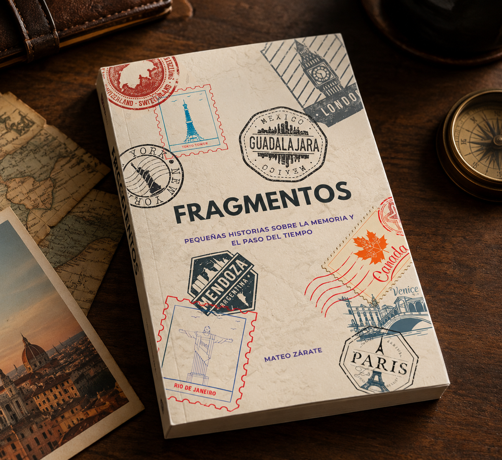

Un libro de apariencia convencional, creado para explorar las posibilidades del mentalismo. Una herramienta versátil que reúne diferentes recursos para construir experiencias, revelaciones y múltiples presentaciones.

Fragmentos es un book test diseñado para integrarse naturalmente en una presentación de mentalismo. Detrás de su apariencia de libro convencional se encuentran diferentes propiedades que permiten explorar múltiples caminos y posibilidades de presentación.
Palabras, números, nombres, ciudades, fechas, horarios e ideas pueden convertirse en el punto de partida para desarrollar distintos efectos y construir rutinas propias.
Una herramienta pensada para ampliar las posibilidades del mentalista y ofrecer nuevas formas de sorprender a sus espectadores.
El material de aprendizaje te acompaña en el conocimiento del libro, sus diferentes propiedades y las posibilidades que ofrece. A través de los tutoriales vas a poder comprender su funcionamiento y explorar distintas formas de incorporarlo a tus presentaciones.